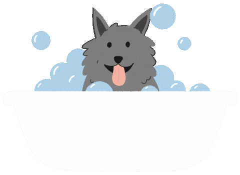
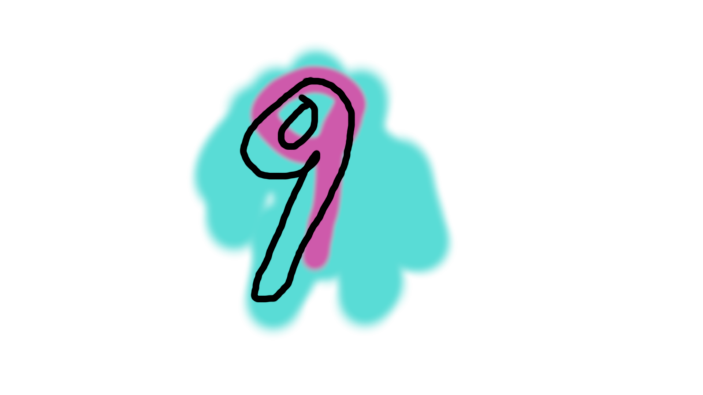
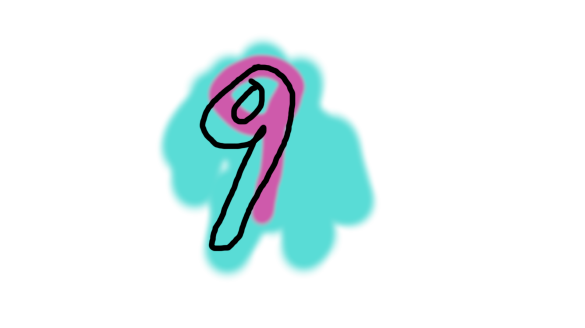

¡¡Aprende a bañar a tus perritos con estos sencillos pasos!! 🐕🐕
PASOS A SEGUIR
12.- Cepillar el pelo El último paso sobre cómo bañar al perro en casa consiste en cepillarle el pelo para que quede suelto y brillante.


 
